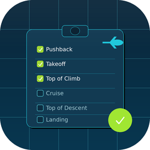
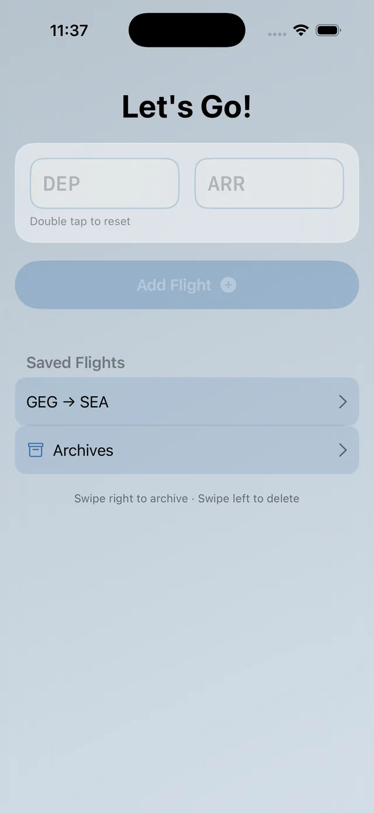

Cabin LOSA · Beta · auditors only
The observation, not the paperwork.
A cabin line-operations safety audit you can run from the jumpseat: threats, errors, countermeasures and turbulence, timed against the real milestones — pushback to landing — and out as one PDF.

What it does
Line observations, filed before you land.
Threats & errors
Coded as they happen, with room for the sentence that actually matters.
Milestones
Pushback, takeoff, top of climb, cruise, top of descent, landing — timed, so every note has a phase.
Turbulence log
The phone's own motion sensors record the event while you keep your hands free.
Export
Demographics, quick takes and the F/A poll, out as one clean PDF when you're ready. Not before.
Questions
Before you buy.
Who can get it?
Trained cabin observers running LOSA-style line audits. It isn't on the public App Store — email us to be issued a TestFlight invite.
Does it send anything?
No. The observation stays on the device until you export the PDF yourself.
Is it an official form?
No. It's a notepad shaped like the method.
Price?
Free to the observers it's issued to.
We can't read it.
That's the design.
Observations are stored on your device only. LOSA does not use iCloud, has no account, and makes no network requests. Read the full LOSA privacy policy.